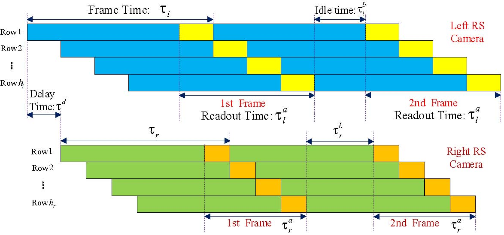

Illustration of the generalized RS stereo configuration

Illustration of the exposure, readout, idle, and delay mechanisms of the generalized RS stereo camera across two consecutive frames. The sensor is exposed and read out row by row at a constant speed. Assuming the camera exposure is instantaneous, the frame time $\tau_i$ includes readout time $\tau^a_i$ and idle time $\tau^b_i$ in the single RS camera $i=l,r$.
Moreover, there is a calibrated delay time $\tau^d$ between the exposure start times of left and right cameras.